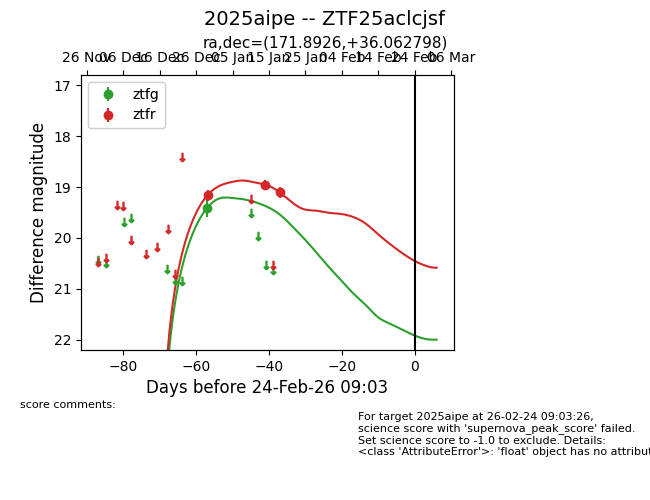
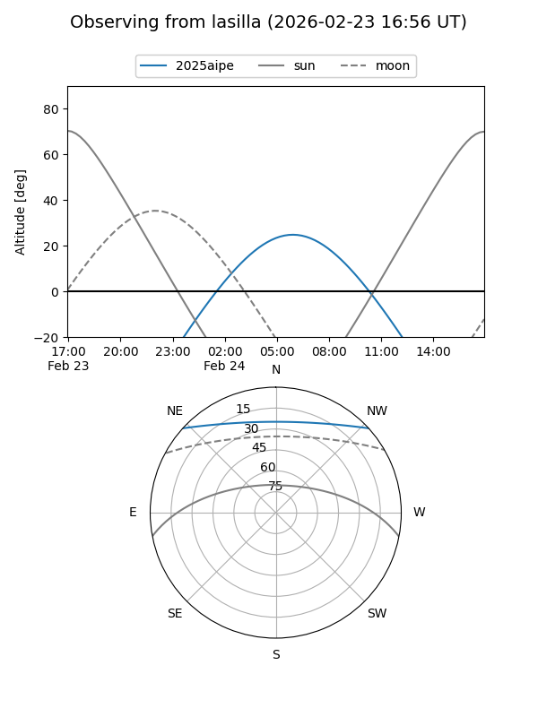
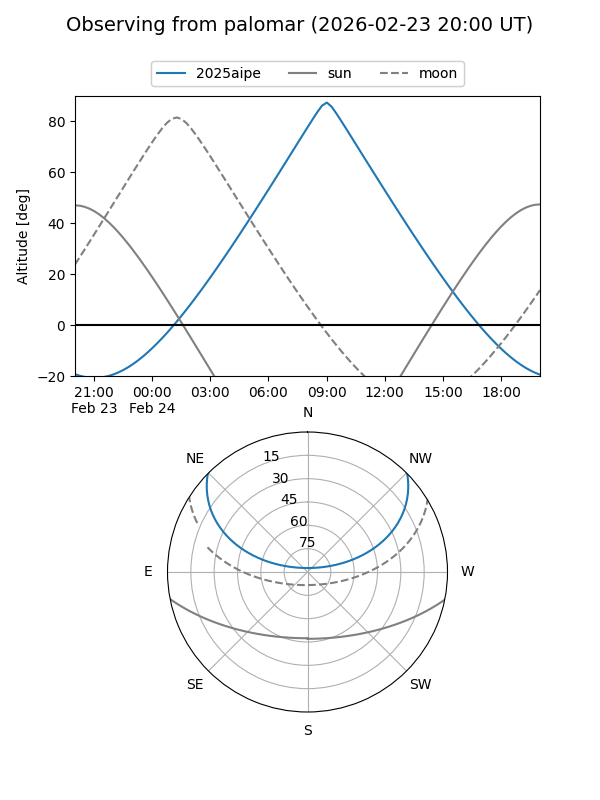
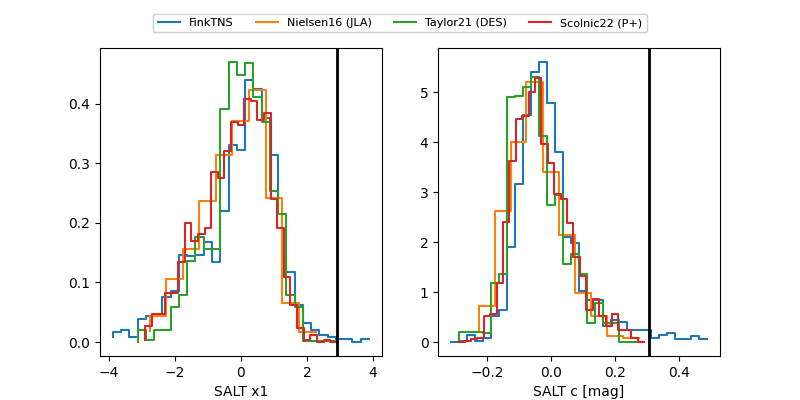

2025aipe
Target 2025aipe at 2025-12-29 16:40
Aliases and brokers:
FINK: fink-portal.org/ZTF25aclcjsf
Lasair: lasair-ztf.lsst.ac.uk/objects/ZTF25aclcjsf
ALeRCE: alerce.online/object/ZTF25aclcjsf
TNS: wis-tns.org/object/2025aipe
YSE: ziggy.ucolick.org/yse/transient_detail/2025aipe
alt names
ZTF25aclcjsf (ztf,fink_ztf)
2025aipe (tns,yse)
Coordinates:
equatorial (ra, dec) = 171.8926,+36.06280
equatorial (HMS+DMS) = 11:27:34.23,+36:03:46.07
galactic (l, b) = (181.0798,+70.09028)
Flags:
Photometry:
last ztfr=19.16
1 ztfr detections
Lightcurve

Visibility


Additional plots
